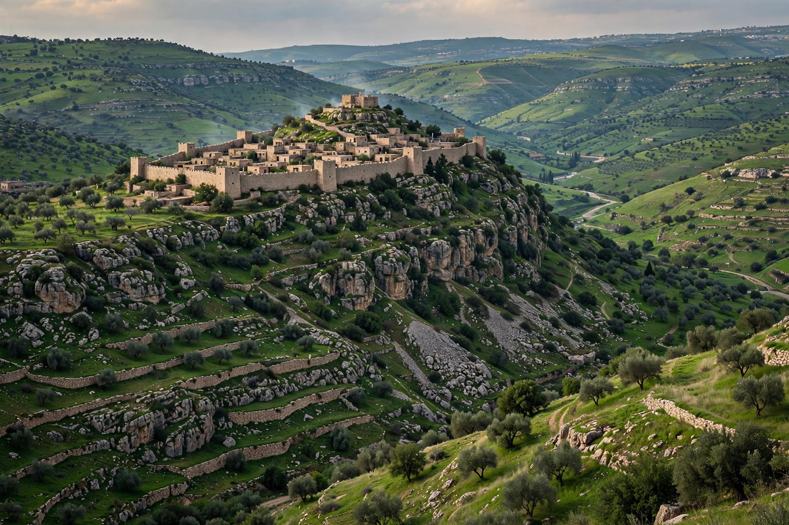

The Siege of Yodfat (Hebrew: יודפת; also rendered Jotapata) was a 47-day siege by Roman forces under the command of Vespasian against the Jewish town of Yodfat in Galilee during the First Jewish–Roman War, in 67 CE. The town was defended by the Jewish commander Josephus, whose account in The Jewish War is the principal source for the siege. After fierce resistance, the Romans stormed the town; thousands of its inhabitants were killed and the survivors enslaved. Josephus himself was captured and later became a historian under Flavian patronage.
| Part of | First Jewish–Roman War |
|---|---|
| Date | 67 CE (47 days) |
| Location | Yodfat, Galilee (near modern Yodfat, Israel) |
| Result | Roman victory |
| Belligerents | Roman Empire; Jewish forces of Galilee |
| Commanders | Vespasian, Titus; Josephus |
| Strength | ~60,000 Romans (Legions V, X, XV); town garrison and inhabitants |
| Casualties | Josephus reports 40,000 killed and 1,200 captured (likely exaggerated) |

When the Jewish revolt against Rome broke out in 66 CE, Yodfat was a fortified town in Lower Galilee. Josephus, appointed commander of Galilee by the Jerusalem government, fortified Yodfat and took refuge there as Vespasian advanced into the region in the spring of 67 CE with three legions, auxiliaries and allied contingents — a force Josephus numbers at some 60,000 men.
Yodfat occupied a hill surrounded by ravines, approachable only from the north. The defenders raised the northern wall and prepared cisterns and stores for a long siege.
The Romans built a circumvallation and siege ramps, battering the walls with rams and artillery. The defenders countered with sorties, boiling oil, and — according to Josephus — cushions of chaff lowered to blunt the rams, and wet hides to protect against incendiary arrows. To stretch the water supply, Josephus rationed water and hung soaked garments along the walls to deceive the Romans into thinking water was plentiful.
After repeated assaults, Vespasian ordered the ramp raised on the northern side. On the final night, Roman troops infiltrated the town in the early morning mist while the exhausted sentries slept, killing them and opening the way for the main assault. The town fell after 47 days. Many inhabitants committed suicide or were killed; others were captured.
Josephus hid in a cistern with forty companions. When discovered, the group drew lots in a suicide pact; Josephus and one other man were the last remaining, and Josephus persuaded the other to surrender instead. Brought before Vespasian, Josephus prophesied that the general would become emperor — a prediction that, when fulfilled in 69 CE, secured Josephus his freedom and Roman citizenship as Flavius Josephus. The mathematical puzzle of the lots known as the "Josephus problem" takes its name from this episode.
The fall of Yodfat broke organised resistance in Galilee and cleared the way for the Roman advance toward Jerusalem, which culminated in the Siege of Jerusalem in 70 CE under Titus. The site was abandoned and only resettled in the modern era; the modern community of Yodfat, founded in 1960, stands nearby.